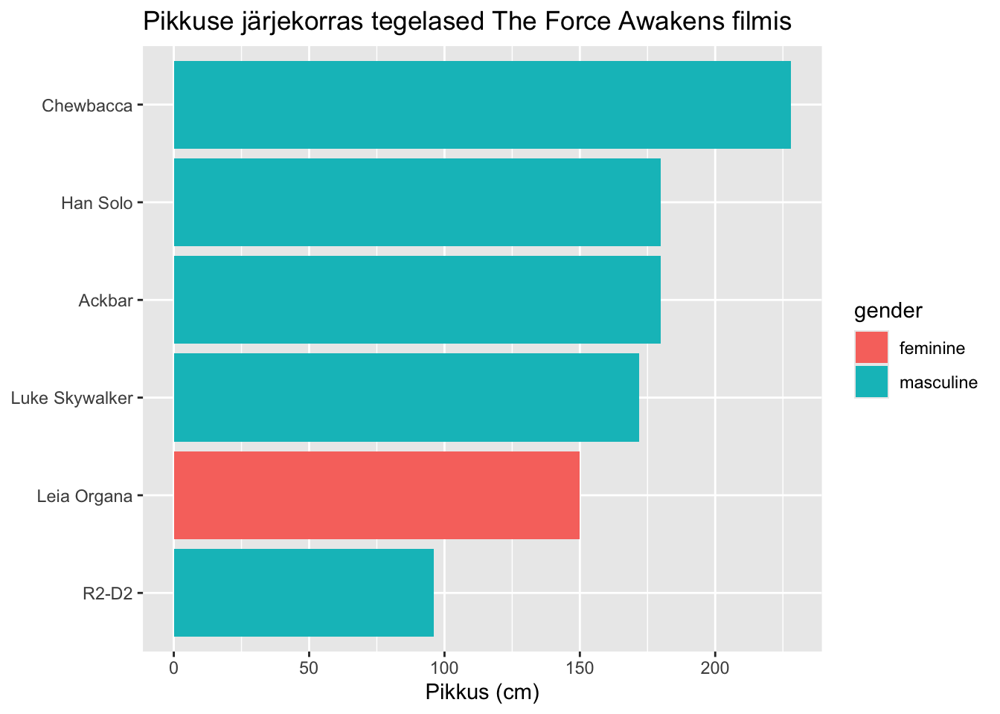

library(tidyverse)
library(gtExtras)#tabelite kujundamiseks
library(kableExtra) #tabelite kujundamiseks16 Loendid ja tsüklid
See peatükk annab ülevaate, kuidas kasutada R-is loendit (list) ja tsükleid (loops). Kasutame R-i olemasolevat andmestiku starwars, mis tuleb tidyverse paketiga kaasa.
data("starwars")16.1 Töö loendi ehk list-iga
Tavaliselt on andmed andmestikus nii, et üks andmeväli sisaldab ühte väärtust. Näiteks andmestiku tunnus name on character tüüpi ning esimeses reas on selles tulbas üks väärtus.
class(starwars$name)[1] "character"starwars$name[1][1] "Luke Skywalker"Mõnikord sisaldab andmeväli aga hoopis mõnda loendit (list) ning siis on väärtusi ühes andmeväljas rohkem. Näiteks tunnus films sisaldab loendi (list) tüüpi andmeid ning andmeväli sisaldab viite erinevat väärtust.
class(starwars$films)[1] "list"starwars$films[1][[1]]
[1] "A New Hope" "The Empire Strikes Back"
[3] "Return of the Jedi" "Revenge of the Sith"
[5] "The Force Awakens" films loend näitab ära, millistes filmides antud tegelane esindatud on. Loendi kasutamine hoiab andmestiku mõnes-mõttes kompaktsena, näiteks teeme tabeli.
starwars%>%
select(name, films)%>%
head(3)%>%
gt()| name | films |
|---|---|
| Luke Skywalker | A New Hope, The Empire Strikes Back, Return of the Jedi, Revenge of the Sith, The Force Awakens |
| C-3PO | A New Hope, The Empire Strikes Back, Return of the Jedi, The Phantom Menace, Attack of the Clones, Revenge of the Sith |
| R2-D2 | A New Hope, The Empire Strikes Back, Return of the Jedi, The Phantom Menace, Attack of the Clones, Revenge of the Sith, The Force Awakens |
Loendi lahti ühendamine
Samas teeb loendi kasutamine andmestikus aga igasuguse tehnilise töö keerulisemaks. Näiteks ei saa kasutada käsku unique(), et teada saada, mis on unikaalsed filmid andmestikus. Selle käsu kasutamine loendi puhul näitab, mis on unikaalsed kombinatsioonid neist filmidest andmestikus. Seepärast on vaja esmalt eraldada loendi väärtused üksteise küljest lahti käsuga unnest(). Nii tekib andmestikku küll rohkem ridu, kuid saame kasutada samu andmeid rohkemates olukorras. Käsu unnest() kasutamisel tuleb öelda, milliseid tulpasid lahti harutama peab (cols=).
Vaatame esmalt, kuidas andmestik välja näeb pärast unnest() käsu kasutamist.
starwars%>%
select(name, mass, films)%>%
unnest(cols = c(films))%>%
head(8)# A tibble: 8 × 3
name mass films
<chr> <dbl> <chr>
1 Luke Skywalker 77 A New Hope
2 Luke Skywalker 77 The Empire Strikes Back
3 Luke Skywalker 77 Return of the Jedi
4 Luke Skywalker 77 Revenge of the Sith
5 Luke Skywalker 77 The Force Awakens
6 C-3PO 75 A New Hope
7 C-3PO 75 The Empire Strikes Back
8 C-3PO 75 Return of the Jedi starwars%>%
unnest(cols = c(films))%>%
nrow()[1] 173Nüüd on lihtne jätkata “tavalise” grupeerimise ja arvutamsiega ja jooniste tegemisega.
starwars%>%
unnest(cols = c(films))%>%
group_by(films)%>%
summarise(tegelaste_arv=n())# A tibble: 7 × 2
films tegelaste_arv
<chr> <int>
1 A New Hope 18
2 Attack of the Clones 40
3 Return of the Jedi 20
4 Revenge of the Sith 34
5 The Empire Strikes Back 16
6 The Force Awakens 11
7 The Phantom Menace 34Teeme joonise filmide kaupa soolise jaotuvuse kohta filmis. Kui siinkohal saab veel facet_wrap() käsu abil ühe koodijupiga loetava ja arusaadava pildi, siis järgmises näites see ei toimi ja vaja on kasutada tsüklit (loops).
starwars%>%
unnest(cols=c(films))%>%
filter(!is.na(gender))%>%
ggplot(aes(gender))+
geom_bar()+
facet_wrap(~films)+
labs(y=NULL,
x=NULL)+
theme_minimal()Oletame, et soovime vaadata filmide kaupa tegelasi nende pikkuse järjekorras ja nii, et tegelased on soo (gender) järgi värvidega eristatud.
Teeme esmalt selliselt pildi ja siis vaatame allpool sama asja uuesti tsükliga. Praegu tuleb pilt väga suur ning võib-olla me ei taha, et joonisel on kuvatud ka nende tegelaste nimed, kes antud filmiga seotud pole.
starwars%>%
unnest(cols = c(films))%>%
filter(!is.na(height))%>%
ggplot(aes(reorder(name, height), height, fill=gender))+
geom_col()+
labs(x = NULL,
y = "Pikkus (cm)")+
theme(legend.position = "bottom")+
coord_flip()+
facet_wrap(~films)Me saaksime teha pildi nii, et esmalt filtreerime välja filmi nime järgi need tegelased, kuid seda tuleks teha iga filmi puhul eraldi. Seitse korda sama asja kirjutada ei ole mõistlik.
Loendi loomine
Loendi loomiseks toimib käsk list(). Põgusalt vaatasime loendis eelmises peatükis tabelitesse mini-graafiku lisamisel. Järgmise käsu käivitamine koostaks meile loendi starwars tegelaste nimedest.
#list(starwars$name)Teeme parem loendi tegelastest nende gender kaupa. Meenutuseks vaatame, kuidas on andmestikus väljad praegu.
starwars%>%
select(name, gender)%>%
head()# A tibble: 6 × 2
name gender
<chr> <chr>
1 Luke Skywalker masculine
2 C-3PO masculine
3 R2-D2 masculine
4 Darth Vader masculine
5 Leia Organa feminine
6 Owen Lars masculineLoome tunnuse käsu list() abil uue tunnused tegelased.
starwars%>%
select(name, gender)%>%
group_by(gender)%>%
1 summarise(tegelased=list(name))- 1
- Teeme loendi. Pane tähele, et väljatrükk näitab ära kui pikk on see loend.
# A tibble: 3 × 2
gender tegelased
<chr> <list>
1 feminine <chr [17]>
2 masculine <chr [66]>
3 <NA> <chr [4]> Kui kasutame käsku gt(), vormindatakse väljatrükk nii, et kuvatakse kõik loendi elemendid.
starwars%>%
select(name, gender)%>%
group_by(gender)%>%
summarise(tegelased=list(name))%>%
gt()| gender | tegelased |
|---|---|
| feminine | Leia Organa, Beru Whitesun Lars, Mon Mothma, Padmé Amidala, Shmi Skywalker, Ayla Secura, Adi Gallia, Luminara Unduli, Barriss Offee, Dormé, Zam Wesell, Taun We, Jocasta Nu, R4-P17, Shaak Ti, Rey, Captain Phasma |
| masculine | Luke Skywalker, C-3PO, R2-D2, Darth Vader, Owen Lars, R5-D4, Biggs Darklighter, Obi-Wan Kenobi, Anakin Skywalker, Wilhuff Tarkin, Chewbacca, Han Solo, Greedo, Jabba Desilijic Tiure, Wedge Antilles, Yoda, Palpatine, Boba Fett, IG-88, Bossk, Lando Calrissian, Lobot, Ackbar, Arvel Crynyd, Wicket Systri Warrick, Nien Nunb, Qui-Gon Jinn, Nute Gunray, Finis Valorum, Jar Jar Binks, Roos Tarpals, Rugor Nass, Ric Olié, Watto, Sebulba, Quarsh Panaka, Darth Maul, Bib Fortuna, Ratts Tyerel, Dud Bolt, Gasgano, Ben Quadinaros, Mace Windu, Ki-Adi-Mundi, Kit Fisto, Eeth Koth, Saesee Tiin, Yarael Poof, Plo Koon, Mas Amedda, Cliegg Lars, Poggle the Lesser, Dooku, Bail Prestor Organa, Jango Fett, Dexter Jettster, Lama Su, Wat Tambor, San Hill, Grievous, Tarfful, Raymus Antilles, Tion Medon, Finn, Poe Dameron, BB8 |
| NA | Jek Tono Porkins, Gregar Typho, Cordé, Sly Moore |
16.2 Töö tsüklitega ehk loops kasutamine
Oletame, et meil on vaja korrata ühte ja sama tegevust vähemalt kolm või neli korda. Hea tava oleks mitte kopeerida sama koodi rohkem kui kaks korda ja seepärast on hea abimees tsükkel ehk loops.
Iga tsükli puhul tuleb esmalt öelda, kui mitu korda seda tsükilt läbi teha tuleb. Me võime panna koodi jooksma küll, et tee x-tegevust viis või kümme korda, kuid päriselus sõltub alati kordade arv mingist väärtusest mõne teise tunnuse sees. Näiteks tee x tegevust iga maakonnaga eraldi läbi. Me ei pea tegema tegevust 15 korda, vaid saame R-ile ette öelda, et tee nii mitu korda kui palju on andmestikus erinevaid maakondi.
Tsüklis i - tähistab muutujat, mis määrab ära korduste arvu. (Hea kui on olemas vektor sellest, mis näitab ära tsüklite arvu.) See, mida tsükkel tegema peab käib loogeliste sulgude {} vahele. Sinna vahele kirjutame oma tavapärased käsud.
Näiteks meil on starwars andmestikus tunnus films, mis näitab ära, millistes filmides konkreetne tegelane olnud on. Teen esmalt sellest loendist käskude unnest(), unique() ja pull() abil vektori.
filmid<-starwars%>%
select(films)%>%
unnest(cols = c(films))%>%
unique()%>%
pull()Vektor filmid sisaldab filmi nimesid.
filmid[1] "A New Hope" "The Empire Strikes Back"
[3] "Return of the Jedi" "Revenge of the Sith"
[5] "The Force Awakens" "The Phantom Menace"
[7] "Attack of the Clones" Tsükkel algab alati sõnaga for, sellele järgnevad sulud (), mille sees määratakse ära tsüklite kordus ning loogeliste sulgude {} sees need funktsioonid, mida üks tsükkel sisaldama peab.
Teen tsükli ja ütleme talle, et korda tsüklit seni kuni oled saanud selle läbi tehtud iga filmid vektori väärtusega.
Tsüklis väljatrükk ei tule automaatselt, seepärast peame talle ütlema ka ette, et prindi tulemus.
Järgmises näites on tsüklis ehk loogeliste sulgude {} sees kolm tegevust.
Tsükkel algab andmetsiku ettevalmistamisega, kus eraldatakse loend ja filtreeritakse välja vektor filmid esimese filmi nime järgi tegelased jms.
Tsükli teine tegevus salvestab objekti pilt filtreeritud andmetest joonise.
Kolmas ja viimane tegevus kuvab eelsalvestatud objekti pilt.
1for (i in filmid){
#tsükli algus
#valmistan ette andmestiku pildi jaoks
tulem <- starwars %>%
unnest(cols = c(films)) %>%
2 filter(films %in% i) %>%
filter(!is.na(height)) %>%
select(name, height, gender)
# teen pildi filtreeritud andmetest
pilt <- ggplot(tulem, aes(x = reorder(name, height), y = height, fill = gender)) +
geom_col()+
coord_flip()+
3 labs(title = paste("Pikkuse järjekorras tegelased", i ,"filmis"),
x = NULL,
y = "Pikkus (cm)")
#prindin väljatrüki ehk pildi
print(pilt)
#tsükli lõpp ja liigub algusesse tagasi
}- 1
-
Määrab ära kui mitu tsüklit on vaja. Tsükleid korratakse seni kuni vektori filmid iga väärtusega (
i) on tegevused läbi tehtud. - 2
-
Väärtust
ikasutatakse selleks, et filtreerida andmestik väiksemaks. - 3
-
Väärtust
ikuvatakse pildi pealkirjas.

Teen veel ühe näite, aga kasutan nüüd tabeleid.
for (i in filmid){
tulem<-starwars%>%
unnest(cols=c(films))%>%
filter(films %in% i) %>%
filter(!is.na(height))%>%
select(name, height, gender)%>%
arrange(-height)%>%
head(3)%>%
kable(caption = paste("Pikkuse top 3 filmis", i))
print(tulem)
}
Table: Pikkuse top 3 filmis A New Hope
|name | height|gender |
|:---------------|------:|:---------|
|Chewbacca | 228|masculine |
|Darth Vader | 202|masculine |
|Raymus Antilles | 188|masculine |
Table: Pikkuse top 3 filmis The Empire Strikes Back
|name | height|gender |
|:-----------|------:|:---------|
|Chewbacca | 228|masculine |
|Darth Vader | 202|masculine |
|IG-88 | 200|masculine |
Table: Pikkuse top 3 filmis Return of the Jedi
|name | height|gender |
|:-----------|------:|:---------|
|Chewbacca | 228|masculine |
|Darth Vader | 202|masculine |
|Boba Fett | 183|masculine |
Table: Pikkuse top 3 filmis Revenge of the Sith
|name | height|gender |
|:---------|------:|:---------|
|Tarfful | 234|masculine |
|Chewbacca | 228|masculine |
|Grievous | 216|masculine |
Table: Pikkuse top 3 filmis The Force Awakens
|name | height|gender |
|:---------|------:|:---------|
|Chewbacca | 228|masculine |
|Han Solo | 180|masculine |
|Ackbar | 180|masculine |
Table: Pikkuse top 3 filmis The Phantom Menace
|name | height|gender |
|:------------|------:|:---------|
|Yarael Poof | 264|masculine |
|Roos Tarpals | 224|masculine |
|Rugor Nass | 206|masculine |
Table: Pikkuse top 3 filmis Attack of the Clones
|name | height|gender |
|:------------|------:|:---------|
|Lama Su | 229|masculine |
|Taun We | 213|feminine |
|Ki-Adi-Mundi | 198|masculine |